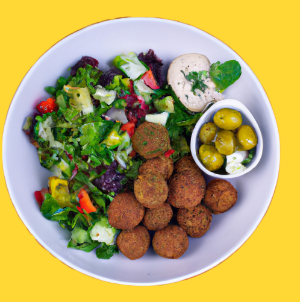

Salades
Salade Méditerranéenne aux Boulettes Falafels

Découvrez une salade méditerranéenne fraîche et savoureuse avec des boulettes falafels, des légumes croquants et une vinaigrette citron-olive. Parfaite pour un repas vegan ou une entrée estivale.
Préparation30 min
Cuisson10-15 min
Portions4
NiveauFacile
Calories350 kcal
Ingrédients
- Pois chiches cuits - 1 ½ tasse
- Oignon moyen, haché finement
- Ail - 3 gousses émincées
- Persil frais - ¼ tasse haché
- 2 cuillères à soupe de farine de pois chiche
- 1 cuillère à café de cumin moulu
- 1 cuillère à café de coriandre moulue
- ½ cuillère à café de paprika
- Sel et poivre au goût
- Huile d'olive pour la cuisson
- 2 tomates coupées en dés
- 1 concombre coupé en dés
- 1 poivron rouge coupé en dés
- ½ tasse d'olives kalamata, tranchées
- ¼ tasse de persil frais haché
- Jus d'un citron
- 2 cuillères à soupe d'huile d'olive extra vierge
- 1 gousse d'ail émincée
- 1 cuillère à café d'origan séché
- Sel et poivre au goût
Préparation
- Dans un mixeur, combinez les pois chiches, l'oignon, l'ail, le persil, la farine et les épices. Mixez jusqu'à obtention d'une pâte homogène.
- Formez de petites boulettes falafels. Si nécessaire, ajoutez un peu de farine pour faciliter le façonnage.
- Faites chauffer de l'huile d'olive dans une poêle et cuisez les boulettes 4-5 min de chaque côté jusqu'à doré. Égouttez sur papier absorbant.
- Dans un saladier, mélangez tomates, concombre, poivron et olives. Ajoutez le persil.
- Préparez la vinaigrette avec le jus de citron, l'huile d'olive, l'ail, l'origan, sel et poivre.
- Versez la vinaigrette sur la salade, mélangez délicatement et disposez les boulettes falafels sur le dessus.
Astuces et accompagnements
- Préparez les boulettes falafels à l'avance et réfrigérez-les.
- Pour une version plus légère, cuisez-les au four à 200°C pendant 20 min.
- Ajoutez de la menthe fraîche ou du basilic pour plus de saveur.
- Accompagnez de wraps vegan ou tacos aux haricots noirs.
- Vin conseillé : Sauvignon Blanc ou Rosé de Provence.
Bon appétit !